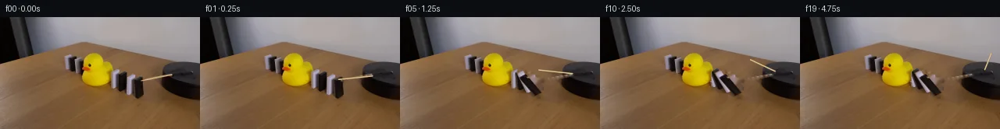

![首帧]()

Round 00
2026-11-05T01:37:53.174323+00:00像素候选变化代码 +213/−0inspection 更新
pixels 4bcd4b84f5856041 · code 03b15e06eaf81202
查看本轮 generate.py 真实 diff
--- previous/generate.py
+++ current/generate.py
@@ -0,0 +1,213 @@
+"""Local pixel continuation of the supplied photograph; no learned models or engine."""
+from pathlib import Path
+import json, math
+import cv2
+import numpy as np
+from PIL import Image, ImageDraw
+from artifact_io import save
+
+ROOT=Path(__file__).resolve().parent
+TMP=ROOT/'.tmp'; TMP.mkdir(exist_ok=True)
+S=4
+W,H=256,144
+SOURCE=np.array(Image.open(ROOT/'first_frame.png').convert('RGB'))
+SOURCE_HI=cv2.resize(SOURCE,(W*S,H*S),interpolation=cv2.INTER_CUBIC)
+
+# Outermost first. Every cuboid has a width edge, thickness edge and vertical edge.
+BLOCKS=[
+ dict(name='outer black',p=(175.7,103.1),u=(3.7,1.7),v=(6.3,-3.4),h=(-.4,-22.0),start=1.15,colour='black'),
+ dict(name='outer white',p=(165.0,98.5),u=(3.5,1.5),v=(6.1,-3.1),h=(-.45,-22.7),start=2.8,colour='white'),
+ dict(name='inner black',p=(153.65,94.25),u=(3.7,1.7),v=(7.05,-3.55),h=(-.35,-21.8),start=4.0,colour='black'),
+ dict(name='inner white',p=(146.3,90.45),u=(3.2,1.45),v=(6.1,-3.25),h=(-.3,-20.4),start=5.2,colour='white'),
+]
+for b in BLOCKS:
+ for k in ('p','u','v','h'): b[k]=np.array(b[k],np.float32)
+ b['o']=b['p']-b['u']
+
+# The rubber obstacle arrests the inner block. Successive angles are limited by
+# contact with the preceding rigid rectangle, rather than rotating through it.
+final=[0.0]*4
+final[3]=math.radians(14)
+physical_height=26.0
+for i in (2,1,0):
+ spacing=float(BLOCKS[i]['o'][0]-BLOCKS[i+1]['o'][0])
+ thickness=float(BLOCKS[i+1]['u'][0])
+ phi=final[i+1]
+ final[i]=phi+math.asin(np.clip((spacing*math.cos(phi)-thickness)/physical_height,-1,1))
+for i,b in enumerate(BLOCKS): b['final']=final[i]
+
+def faces(b,angle=0):
+ o,u,v,h=b['o'],b['u'],b['v'],b['h']
+ ratio=physical_height/float(u[0])
+ rot_u=u*math.cos(angle)+h*(math.sin(angle)/ratio)
+ rot_h=h*math.cos(angle)-u*(ratio*math.sin(angle))
+ p=o+rot_u
+ return [np.array([o,p,p+rot_h,o+rot_h],np.float32),
+ np.array([p,p+v,p+v+rot_h,p+rot_h],np.float32),
+ np.array([o+rot_h,p+rot_h,p+v+rot_h,o+v+rot_h],np.float32)]
+
+# Remove only the known rod and the right-side blocks from the table.
+# Photograph pixels outside these local regions are retained exactly.
+rod_mask=np.zeros((H,W),np.uint8)
+cv2.fillConvexPoly(rod_mask,np.round(np.array([(182.1,80.1),(222.4,72.9),(223,75.9),(182.2,84.1)])).astype(np.int32),255)
+rod_clean=cv2.inpaint(SOURCE,rod_mask,3,cv2.INPAINT_TELEA)
+block_masks=[]
+for b in BLOCKS:
+ pts=np.concatenate(faces(b))
+ maskhi=np.zeros((H*S,W*S),np.uint8)
+ cv2.fillConvexPoly(maskhi,cv2.convexHull(np.round(pts*S).astype(np.int32)),255)
+ mask=cv2.resize(maskhi,(W,H),interpolation=cv2.INTER_AREA)
+ # Include the original soft object boundary in the reconstruction.
+ mask=cv2.dilate((mask>16).astype(np.uint8)*255,np.ones((3,3),np.uint8))
+ block_masks.append(mask)
+all_mask=np.maximum.reduce(block_masks)
+# Fill narrow voids with the nearby image's wood grain; inpaint supplies boundary
+# colour, while a translated patch supplies subtle nonuniform surface texture.
+background=cv2.inpaint(rod_clean,all_mask,4,cv2.INPAINT_TELEA)
+patch=np.roll(rod_clean,-27,axis=0).astype(np.float32)
+patch_blur=cv2.GaussianBlur(patch,(0,0),3.0)
+grain=(patch-patch_blur)*0.38
+background=np.clip(background.astype(np.float32)+grain*(all_mask[:,:,None]/255),0,255).astype(np.uint8)
+Image.fromarray(background).save(TMP/'clean_table.png')
+
+# Preserve the silhouette of the duck when a block contacts its rubber flank.
+duck_roi=np.zeros((H,W),np.uint8)
+cv2.fillConvexPoly(duck_roi,np.array([(102,48),(131,45),(144,56),(149,76),(144,88),(112,92),(101,80)]),255)
+r,g,bl=[SOURCE[:,:,i].astype(float) for i in range(3)]
+duck_alpha=((r>90)&(g>75)&(bl<0.70*np.minimum(r,g))&(duck_roi>0)).astype(np.float32)
+duck_alpha=cv2.GaussianBlur(duck_alpha,(0,0),.25)
+
+# Original photographic texture on each face. Rendering uses independent
+# homographies for the rotated cuboid surfaces, with mild illumination changes.
+face_sources=[]
+for b in BLOCKS:
+ sources=[]
+ for quad in faces(b):
+ a=np.zeros((H*S,W*S),np.uint8)
+ cv2.fillConvexPoly(a,np.round(quad*S).astype(np.int32),255,lineType=cv2.LINE_AA)
… diff truncated; 126 more lines …